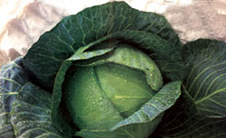
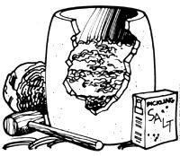

Cabbage (Brassica oleracea capitata) is a member of the cole family, as are cauliflower, Brussels sprouts, kale kohlrabi, and collards. A related plant grows wild along the coasts of western and southern Europe, and it was probably from this "sea cabbage" that our garden varieties originally developed. People have eaten cabbage for more than 4,000 years,and several different types were already being cultivated by the height of the Roman Empire. Cabbage can be grown throughout the continental U.S., but late varieties must be chosen in the South.
Today's gardeners can chose from hundreds of early-, midseason-, and late-maturing varieties. Among the early cabbages are Copenhagen Market, Golden Acre, Early Dark Green Savoy, Early Jersey Wakefield, Marion Market, Emerald Cross Hybrid, Stonehead Hybrid, and Dwarf Morden. (This last is a miniature Canadian cabbage that is only 4" across and matures in 55 days.) Autumn Marvel, Penn, Red Acre and Savoy King are midseason and midseason-late varieties, while late cabbages, like Penn State Ballhead and Wisconsin Hollander, provide an autumn or-in mild climates-even a winter harvest. Because cabbage takes from 60 to more than 180 days to mature, only early types are suited to regions of the country with very short growing seasons.
Of course, there are other ways to classify cabbages. Leaves, for example, can be smooth or crinkled (A crinkled-leafed Savoy c ontains more iron than other cabbages.) Shades vary from reddish purple (Red Acre, Ruby Ball, and Mammoth Red Rock, for example) to light green, and stems can be almost nonexistent to 20" long. Some, such as the Wakefield varieties, have conical heads, while others produce hearts that are round or flat. There are ornamental cabbages, too, having loose, flowering heads with ruffled centers of red, white, or pink and outside borders of green leaves. Gardeners grow them for their beauty alone in containers on patios or even indoors in a sunny location. However, besides being showy autumn plants, they're quite edible and make a colorful addition to salads.
There are other considerations when selecting the type of cabbage to grow. For instance, a Wakefield, as well as most purple cabbages, keeps better than, say, the Savoy types, which are best eaten right from the garden. (And your first taste of garden-fresh cabbage will convince you of the value of growing your own! Store-bought versions are usually harvested weeks, if not months, before they're marketed.) If you want a good winter cabbage that's flavorful cooked or raw, consider the tight-headed white cabbages and such varieties as Celtic Cross F1. Should diseases be a problem in your area, Golden Acre, Marion Market, Stonehead Hybrid, and Early Jersey Wakefield are among the more disease-resistant types. In regions with long hot spells, a heat-resistant cabbage, such as Savoy King, is a good selection.
Cabbages are easy to start from seed. Sow early varieties indoors, 1/4" deep and 2" apart, about four to six weeks (usually mid-January or February in the South and March in the North) before time to set them out in the garden. Place the flats in a greenhouse, on a sunny windowsill, or under fluorescent lights. (Unused seeds should keep for four or five years with germination rates of around 75%.)
Keep the soil uniformly moist and at 60° to 70°F. (Large, clear plastic bags slipped over the flats can help maintain moisture and temperature levels, but if the seedlings start to turn pale green or sickly, you can assume that they're too warm.) Once three leaves have formed, the seedlings will be ready to be hardened of in a cold frame or exposed to outdoor conditions (50° to 55° F) for a week or so before they're set in their permanent spot. Just remember: While cabbage seedlings need all the sunshine they can get, daytime temperatures should be on the cool side, and-during hardening off-the tender plants should be brought in at night.
If you're using a cold frame, open it when the temperature inside exceeds 65°F, and close it at sundown. Keep the soil moderately moist, and don't fertilize in the germinating or hardening-off stages; your young cabbages might produce tall, skinny stems and may flower rather than form heads.
Once the plants are well hardened, they can be set out in the garden, even though nighttime temperatures drop below freezing for several days. Stagger your plantings at regular intervals in order to harvest throughout the summer.
With midseason or late types, seeds can be sown in outdoor flats instead of under glass or lights. Otherwise, the growing procedure is the same. Midseason varieties can be sown after the last frost. Late types should be started around the first to the middle of July to be transplanted to the garden by the first or middle of August (no later than August 1 in the North).
Pick a sunny, well-drained location for your cabbage patch. Early varieties do best in a sandy loam, while later types like a heavier soil that will retain moisture. Since this vegetable is a heavy feeder, plow under 3" or more of well-rotted manure or compost at least two weeks before you set out the young plants. Add greensand for potassium, and phosphate rock for phosphorus. Cabbage also dislikes acid soil, preferring a pH between 6.0 and 7.5. Even with ideal pH, raking a heavy dusting of ground limestone into the plowed earth is a good idea, particularly when club root is a potential problem.
Ample moisture is even more important than perfect soil, so mulch your plants well to retain water and to keep down weeds. (To avoid hoe damage to the vegetable's shallow roots, hand-pull any competition that appears.) Overhead watering during periods of high humidity or cool weather can cause diseases if the dense leaves don't get a chance to dry out, and soggy mulch adjacent to the plants may cause the heads to split.
Cabbage can be planted between, or in , rows of early lettuce and radishes, since these crops will be harvested before the cabbage needs the space they occupy. You can follow a cabbage crop with beets, beans, or late corn, while late cabbage can be planted in the same rows from which you've harvested peas or carrots.
Since pinching the stem of a baby cabbage can cause permanent damage, handle the transplants gently. Set them out in 1/2"- to 1"-deep holes that are wide enough to accommodate a fully spread rootball, then apply enough water to insure contact between the rootlets and the soil. Space the seedlings 6" to 12" apart in rows 12" to 25" apart. (The wider the spacing, the larger the cabbages can grow, but younger, smaller ones are tastier. If you use 6" spacing, you can harvest every other one before maturity. A 100' row of 70 early cabbage plants will yield about 100 pounds; 60 late types in the same space, about 175 pounds.) Firm the soil well around the seedlings, and side-dress them with well-rotted manure three weeks after transplanting. If the leaves start to yellow, your plants probably need a midseason nitrogen boost. Otherwise, cut back on watering and fertilizing as the plants mature, to prevent the heads from splitting.
Cabbage, like all members of the cole family, has some traditional enemies, includ ing caterpillars, cutworms, flea beetles, aphids, harlequin bugs, black rot, root knot, yellows, club root, and blackleg. However, these pests and diseases will seldom cause you to lose a healthy, well-weeded crop. Your best lines of defense are to provide good growing conditions, rotate cole crops to different areas of the garden, and use disease-resistant varieties.
Cabbage maggots (white, legless, and 1/3" long) are the offspring of cabbage-root flies. They attack the stems, causing the plants to wilt in hot weather. Gently pull the dirt away from such plants, and if you see an infestation, put a heaping tablespoon of wood ashes around each stem, firm up the soil, and water well. Maggots can also be controlled by the prompt removal of the eggs, which look like small grains of white rice. If a plant dies, pull it up and burn it: You certainly want to keep the problem from spreading.
Cabbage butterflies have white or yellow wings marked with three or four black spots and tipped with gray. They lay eggs at the base of cabbage plants, and a week later, caterpillars hatch out to eat big, ragged holes in the foliage, leaving behind bits of green excrement. Inspect the plants and pick off both the eggs and caterpillars, or, later in the season, they will bore into the young cabbage heads. You can discourage the butterflies by surrounding your cabbage bed with tomatoes, garlic, onions, tansy, sage, rosemary, nasturtiums, catnip, or hyssop. Caterpillars can also be killed with a dusting of salt and flour, which causes them to bloat and die. Some gardeners say sour milk spooned into the cabbage heads is sufficient to get rid of worms, while others use a spray of ground mint, onion, garlic, and hot peppers in a little soap and water.
If you're invaded by cabbage loopers (a pale green worm) or harlequin bugs (a southern pest), biological controls include importing a supply of trichogramma wasps, which are parasites, and spraying the crop with Bacillus thuringiensis, a powdered bacterium. Handpicking is slower, but also effective.
Small holes in the leaves are probably caused by flea beetles, which can be discouraged by watering well each evening. Whiteflies and aphids cause unsightly trails of droppings on the leaves, but cabbage can usually survive such pests. If the attack is noticed early, spraying the insects with soapy water should keep them under control.
When cabbage heads become firm to the touch, you can start to harvest them. Splitting, if not caused by irregular watering, 1986 means the heads are past their prime. If you want to hold a mature cabbage in the ground a little longer, a slight twist of the head will break some of the feeder roots and keep the plant from bolting or splitting.
To harvest, cut the heads off the root system with a sharp knife. Discard the inferior outer leaves and inspect for insects. If you leave the stalks and roots in place, they'll produce tasty little sprouts that can be eaten like Brussels sprouts or, when left alone, will develop into a second crop of small heads.
Cabbage tastes best when eaten soon after harvesting, but late-season varieties, in particular, will keep well in a moist, cool (32° to 40°F) location for five to six months. Late cabbages can be left in the ground all winter in mild climates, or they can be pulled up by the roots, heeled-in upside down in a well-drained trench, and covered with a foot of leaves or hay. Another storage method is to wrap the individual heads in waxed paper and place them in the coolest part of an attic or basement. You can salvage split heads by quickly turning them into sauerkraut.
"Isn't there anything to do with cabbage," people have been known to ask, "besides making sauerkraut and cole slaw?" There certainly is, and a quick look through cookbooks will soon turn up any number of wonderful ways to prepare this versatile, low-calorie vegetable, which is rich in vitamin C and contains good amounts of vitamins B1, B2, and A, along with calcium, phosphorus, and iron. It can be baked, steamed, boiled, and stir-fried, and enjoyed in salads, soups, and stews, though cooking, of course, destroys some of the nutrients. (If you notice a strong odor when cooking cabbage, you may be using too high a heat or too much water. Some people claim that half a walnut dropped in the water will eliminate the odor problem.) Here are just a few MOTHER-tested dishes we think you'll enjoy.
3 tablespoons margarine
1 pound shredded cabbage
1 cup thinly sliced onions
6 cups homemade chicken broth
1 teaspoon salt
1/8 teaspoon pepper
1/8 teaspoon nutmeg
1/2 cup rice
1 cup shredded Gruyere cheese
Melt margarine in a 4-quart kettle. Rinse cabbage and add to margarine along with onions. Cook over medium heat for about 10 minutes. Add broth, salt, pepper, and nutmeg. Simmer, covered, for 10 minutes. Add rice and cook 20 minutes or until rice is tender. Ladle into bowls and garnish with cheese. Serves 8.
Per serving: 300 cal., 13 g pro., 8 g carbo., 15 g fat, 751 mg sodium. U.S. RDA: 14% vit. A, 23% vit. C, 40% calcium.
1 large head green cabbage
1 recipe for stuffing (see below)
1/2 cup olive oil
1 8-ounce can tomato sauce
1 bay leaf, crushed
2 cups beef boullion
1/2 pound ground beef
1/2 pound ground lamb
1 egg
1 medium onion, chopped
1/2 teaspoon oregano
1/2 teaspoon mint
1/4 teaspoon cinnamon (optional)
Salt and pepper to taste
3/4 cup raw white rice
2 tablespoons tomato sauce
3 tablespoons olive oil
1/2 cup dry white wine
Core cabbage and separate leaves. Parboil leaves in salted water for 5 minutes. Combine all stuffing ingredients and mix well. Place stuffing in individual cabbage leaves. Fold two opposite sides of each leaf inward and roll, starting at the short end. Place rolls in layers in large pot. Sprinkle each layer with olive oil, tomato sauce, and bay leaf. Add bouillon to the pot, adding enough water to cover the rolls. Cover and simmer over low heat for one hour. Serves 6 to 8.
Per serving: 382 cal., 12 g pro., 11 g carbo., 32 g fat, 23 mg sodium. U.S. RDA: 38% vit. C.
Quarter and shread firm heads and put a 4" layer of cabbage in a sterilized wood or crockery container. Add a layer of pickling salt (which has no chemical additives to affect taste or color) and pound the two together with a wooden mallet or clean baseball bat (avoid metal utensils). This releases the cabbage juices and the natural bacteria and initiates the fermentation process.
Keep adding layers of cabbage and salt and tamp each thoroughly. A five-gallon crock will hold 40 pounds of cabbage and will require 1 pound of salt. Fill the container to within 3" or 4" of the top, and place a plate-weighted down with a rock-on the kraut to make sure it is completely covered with brine. Otherwise, it will rot. Cover the crock with a clean cloth.
Sauerkraut can be cured in either a warm or cool environment. The first, a fast process, tends to produce a "sweet" kraut, and the second, which slows fermentation, makes a "tart" product. It's important to check the container every other day during the preservation process, washing the plate and the rock and skimming off any mold or scum that forms. When the mixture quits bubbling, it's ready to eat, can, or store in a cool place for winter enjoyment.
|
 |
 |
|